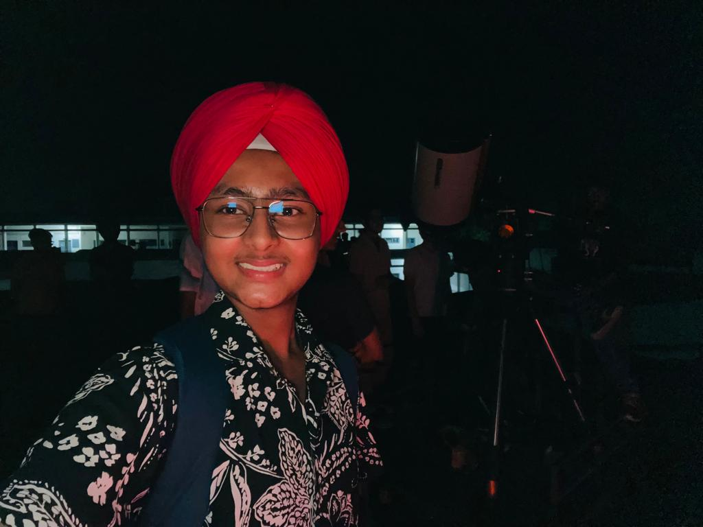

Jashanpreet Singh Dingra / astrodingra

Status: BSc. Physics Student @ Guru Nanak Dev University.
Focus: Computational Astrophysics, Galaxy Morphology, AGN Dynamics, High Redshift Galaxies.
Role: Founder of Dingrastro Club, ISRO Space Tutor, Astropy Contributor, Author, Founder
I develop and utilize open-source astronomical pipelines and machine learning frameworks to analyze deep space data. My research bridges observations from next-generation surveys with theoretical models of galaxy evolution, morphological classification, and stellar kinematics.
Publications
Full manuscripts under review and ongoing research projects.
-
A Unified Deep Learning Framework for Automated Morphological Classification and Photometric Analysis using DECals Legacy Imaging
[Galamo Project]
-
Investigating the relationship between black hole mass and galaxy dynamics in Seyfert Type II and LINER galaxies
Presented the correlation between MBH specifically for Seyfert Type II, overcoming obscuration challenges. -
The Evolutionary Destiny and Observational Deficits of JWST "Little Red Dot" Analogues in Illustris TNG
Predicting early-universe anomalies as direct progenitors of today's massive BCGs via radiatively efficient AGN feedback.

Software
Developed software tools and applications.
-
sitee.in
[Visit sitee.in] -
Texwolf
[Zenodo Record]
Conferences & Impact
Talks & Presentations
- ICNPA 2024: Best Oral Presentation Award at the Int. Conf. on Nuclear Physics and Its Applications, New Delhi.
- Advances in Cosmology: Christ University, Bangalore (2025).
- Astronomy Webinar: Guest Speaker, Astronomy Club, Kosovo (2023).
- Invited Speaker: Star Party, The Millennium School, Patiala (2025).
- Symposium on Nuclear Physics: 68th Edition, IIT Roorkee (2024).
- AGN Conference: National Conference on Active Galactic Nuclei, CUHP, India (2025).
Summer Schools & Hackathons
- AdventureX (2025): Final Round at China's Biggest Hackathon, Hangzhou, China.
- ZTF Summer School (2025): University of Minnesota, USA.
- Gravitational-Wave Astronomy (2025): Summer School at ICTS-TIFR, Bangalore.
- IAAS 13th Edition (2025): IIST Astronomy and Astrophysics School, Kerala.
- Space Science Data (2025): Summer School on Analysis & Statistical Modelling, MCNS, Karnataka.
- Pulsar Data Analysis (2022): HEASARC (NASA), India.
- Ideathon Winner (2025): GNDU Golden Jubilee Center of Entrepreneurship.
Education & Resources
Educational materials and lectures authored or curated:
-
Computational Astrophysics / AGN Analysis:
An interactive, online graduate lecture series on the astrophysics of galaxies.
[Watch on YouTube] -
Python for Astronomy:
A comprehensive eBook for processing and analyzing astrophysical data using Python.
[Read eBook PDF]
Contact
Email: astrodingra@gmail.com
Website: www.astrodingra.in
GitHub: github.com/dingra11
Phone: +91 8847242013
Technical Skills: Julia, Matlab, Python, R, HTML, CSS, JavaScript, PHP, C++, SQL.
Software: Aladin, TopCat, DS9, VIREO, IRAC, GALFIT.